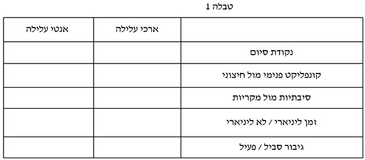

ג. קולנוע אמנותי
חזרה לדף קודםחשיבות הנושא
הקולנוע האמנותי נראה כמו קולנוע ייחודי, עם טביעת אצבע איכותית של יוצר וחסר כל מוסכמה או ציפייה ז'אנרית, אך למעשה גם לקולנוע זה יש מנגנון נרטיבי ומבנה, ציפיות ומוסכמות. בפרק זה נלמד את המנגנון שיוצר את תחושת המורכבות והעומק של סרטי האיכות. מיקומו של הפרק בסוף תוכנית הלימודים הוא הזדמנות טובה לערוך השוואה ביחס שלו לז'אנרים אחרים, ובכך הוא ישמש מעין סיכום כללי לקראת תסריט הגמר.
בתחילת הפרק נכיר את מאפייני הנרטיב של הסרט האמנותי וכיצד ניתן לייצר תחושת מורכבות ועומק. לאחר מכן נעסוק באוטר התסריטאי ובאינטר-טקסטואליות ככלי ליצירת מורכבות. בהמשך הפרק נעסוק בנושא של ביקורת קולנוע. נראה את כתיבת הביקורת כמעין שילוב וסיכום של תיאוריית האוטר והז'אנרים. לבסוף נעבור לנושא המסכם: כתיבת תסריט הגמר על פי אחד הז'אנרים שנלמדו. נעסוק בתסריט הגמר משלב הרעיון ועד לדראפט מלא ופיצ'ינג.
תת-הנושאים
ג.1 הסרט האמנותי – מאפיינים נרטיביים.
ג.2 עיצוב מורכבות פסיכולוגית ומצבי תודעה.
ג.3 אינטר-טקסטואליות ואוטר.
ג.4 ביקורת קולנוע.
מטרות אופרטיביות
- התלמיד ידע להסביר מהן המוסכמות הנרטיביות של הקולנוע האמנותי.
- התלמיד ידע לאפיין את הפרוטגוניסט של הקולנוע האמנותי.
- התלמיד ידע להסביר כיצד הנרטיב של הסרט האמנותי שונה מז'אנרים אחרים על ידי השוואה בין התבנית הקלאסית ל"אנטי עלילה".
- התלמיד יבין כיצד הוא יכול להשתמש במצבי תודעה ככלי סיפורי.
- התלמיד יכיר את הטכניקה לבניית מודעות של דמות (חלון ג'והרי).
- התלמיד יכיר את עקרונות הסרט האקספרימנטלי.
- התלמיד ידע להגדיר ולהדגים מהי אינטר-טקסטואליות.
- התלמיד יצפה בסרט "ביקור התזמורת" ויכיר את התסריט לסרט.
- התלמיד יתנסה בכתיבת ביקורת קולנוע.
מושגים מרכזיים
התבנית הקלאסית – "ארכי עלילה" – סיפור שבנוי סביב פרוטגוניסט פעיל, הנאבק בעיקר בכוחות חיצוניים ברדיפה אחר מושא התשוקה שלו, כל זה קורה בזמן מתמשך ובמציאות עקבית וסיבתית, עד לסיום סגור הגורם לשינוי מוחלט ובלתי הפיך.
אנטי מבנה – "אנטי עלילה" – האנטי עלילה סותרת את הצורה המסורתית כדי לנצל את עצם הרעיון של עקרונות צורניים או ללעוג לו. יוצר האנטי עלילה מבקש להפגין את תפיסתו המהפכנית.
עלילה אקראית – קיימת בעולם בדיוני שבו פעולות ללא מניע מציתות אירועים שאינם גורמים לתוצאות נוספות. כך המקריות מפרקת את הסיפור לאירועים מסתעפים ולסיום פתוח המביע את השרירותיות של היקום.
מטפורה – מושג, משפט או סמל שיוצר סוג של דימוי, באופן לא מובהק (ללא כ' הדימוי). מטפורה לוקחת תכונה, חפץ וכו' מתחום אחד לאחר. במטפורה ישנו שינוי בין המשמעות המקורית למשמעות החדשה.
דימוי – משווה בין שני דברים שונים מתחומים שונים, אך דומים בבסיסם, כדי ליצור משמעות חדשה. הקישור בין שני המרכיבים הוא דרך כ' הדימוי או מילות קישור המתארות דימוי (כמו, כאילו ועוד).
הסרט האקספרימנטלי – סרט ניסיוני הוא שם המתאר מגוון סגנונות קולנועיים אשר בדרך כלל שונים משיטות העבודה המקובלות של הקולנוע הקלאסי או מתנגדים להן.
אינטר-טקסטואליות – הפעלה בו זמנית של שני טקסטים או יותר.
ג.1 הסרט האמנותי – מאפיינים נרטיביים
ציפיות ומוסכמות
בז'אנר הסרט האיכותי אנו מצפים, בניגוד לז'אנרים אחרים, למצוא א-נוסחתיות שכן אלו סרטים עם טביעת אצבע ייחודית. כמו כן, אלו סרטים המתאפיינים לכאורה באנטי מבנה. אילו ציפיות יהיו לנו מסרטים כאלה?
נצפה בטריילר של הסרטים הבאים:
"שמונה וחצי"
"הנוסע"
"מילים נרדפות"
"פרסונה"
לדיון
● הצגת במאי הסרט, מדוע?
● מהו לדעתכם המסע שיעבור גיבור הסרט אם בכלל?
● איזה רגש אנחנו נחווה כצופים?
● אילו דמויות נצפה לפגוש בסיפור זה?
● אילו סצנות יהיו שם?
● באיזה מרחב התרחשות יתקיים הסרט?
● האם הסוף יהיה טוב? סוף פסימי או אופטימי?
● מה הנושא בו הסרט יעסוק?
● מוסכמות הסיפור:
o אנטי מבנה – סיפור שלא מונע על ידי הרצון של גיבור.
o גיבור עם מורכבות פסיכולוגית שנמצא במאבק פנימי.
o דיאלוגים מרובים – שיחות מתוחכמות ופיוטיות על החיים.
o בעיות יומיומיות.
o עיסוק במיניות.
התבנית הקלאסית מול אנטי עלילה
שלא כמו הסרט הקצר הקלאסי שהנרטיבים שלו בדרך כלל מחויבים לקשרים עלילתיים של סיבה ותוצאה וסוף סגור עם פתרון לדילמה, הסרט האמנותי בועט במוסכמות אלה.
התבנית הקלאסית – "ארכי עלילה" – סיפור אשר בנוי סביב פרוטגוניסט פעיל, הנאבק בעיקר בכוחות חיצוניים ברדיפה אחר מושא התשוקה שלו, כל זה קורה בזמן מתמשך ובמציאות עקבית וסיבתית, עד לסיום סגור הגורם לשינוי מוחלט ובלתי הפיך.
אנטי מבנה – "אנטי עלילה" – האנטי עלילה סותרת את הצורה המסורתית כדי לנצל את עצם הרעיון של עקרונות צורניים או ללעוג לו. יוצר האנטי עלילה מבקש להפגין את תפיסתו המהפכנית.
האנטי מבנה אינו מתקיים בפני עצמו אלא הוא תגובה לתבנית הקלאסית. האוונגרד והאמנותי התקיים כדי להתנגד לפופולרי ולמסחרי. לכן נדגיש שגם כדי לעשות סרט אמנותי הכותב חייב לשלוט קודם בתבנית הקלאסית. גם פליני עשה את "לה סטרדה" לפני "שמונה וחצי", וברגמן ביים סיפורי אהבה ודרמה לפני "פרסונה".
לדיון
● במה הבחירה במבנה או באנטי מבנה היא פוליטית?
● האם אתם ככותבים מאמינים באבסורד ושאין לחיים משמעות או שאתם מאמינים שניתן להשפיע על המציאות?
● מדוע רוב הצופים מצביעים ברגליים דווקא לסרטים מסחריים?
● מדוע רוב בני האדם אינם יכולים לשאת את חוסר העקביות שבאנטי עלילה?
להלן מרכיבי ההשוואה בין שתי הפרדיגמות הסיפוריות:
- נקודת סיום
התבנית הקלאסית מובילה לסיום סגור – כל השאלות שעלו בסיפור קיבלו מענה, וכל הרגשות שהתעוררו מסופקים. דבר אינו מוטל בספק. שיא שמותיר שאלה או שתיים ללא מענה, או רגש כלשהו לא מסופק, הוא סיום פתוח.
הסרט האמנותי מאופיין בסוף פתוח, קיצוני ואלים שלא נותן תשובות, או במעשה קיצוני. סוף סגור שיש בו תשובה אחת נותן תשובה חד משמעית; סוף פתוח נותן אמביוולנטיות.
0. קונפליקט חיצוני מול קונפליקט פנימי
התבנית הקלאסית שמה דגש בקונפליקט חיצוני. אף על פי שלדמויות שלה יש קונפליקט פנימי חזק, הדגש הוא במאבקים מול כוח חיצוני (בן זוג, מוסד חברתי וכדומה). באנטי מבנה הדגש הוא במאבק פנימי.
0. פרוטגוניסט פעיל מול פרוטגוניסט סביל
הפרוטגוניסט של התבנית הקלאסית הוא פעיל ודינמי. הוא רודף בעקשנות אחר מושא התשוקה שלו גם שהדבר כרוך בעימותים מכאיבים. הפרוטגוניסט של האנטי עלילה סביל יחסית לעומתו. בדרך כלל מפצה על הסבילות הזאת מאבק פנימי רב-עוצמה של הגיבור, שאמנם אינו פעיל כלפי חוץ אבל מתעמת עם היבטים באופיו.
דיון: לאיזו פרדגימת סיפור שהכרנו בפרק המלדורמה, מבנה אירוע או מבנה מסע הגיבור, יתאימו כל אחד מגיבורים אלו?
0. זמן ליניארי מול זמן לא ליניארי
התבנית הקלאסית מתחילה בנקודה מסוימת בזמן, נעה בדילוגים במסלול של זמן מתמשך ומסתיימת מאוחר יותר. אם משתמשים בפלאשבקים הם מעוצבים כך שהצופים יוכלו למקום אותם בסדר כרונולוגי. האנטי עלילה לעומת זאת מפרידה, מערבלת או שוברת לעתים קרובות את ציר הזמן כדי לא לאפשר את מיון האירועים באופן ליניארי. סיפור שמדלג בזמן או מערבל את הרצף הכרונולוגי עד שהקהל כבר לא יכול להבין מה קורה לפני ואחרי מסופר באופן לא ליניארי.
0. סיבתיות מול מקריות
התבנית הקלאסית מדגישה את האופן שבו מתרחשים דברים בעולם, איך סיבה יוצרת תוצאה וזו הופכת לסיבה של דבר אחר וכן הלאה, לשרשרת של סיבתיות. מרכיב זה של סיבה ותוצאה מעניק לחיים משמעות – אנחנו מבינים את הקשר בין הדברים. האנטי עלילה מחליפה סיבתיות במקריות, שוברת את השרשרת ומובילה במכוון לחוסר משמעות ואבסורד.
סיבתיות – קיימת בסיפור שיש בו פעולה עם מניע המוביל לתוצאות שמאוחר יותר הופכות לסיבות של תוצאות אחרות. כך קושרת הסיבתיות את הרמות השונות של הקונפליקט בתגובת שרשרת של אירועים עד לשיר לסיום הסיפור.
מקריות – קיימת בעולם בדיוני שבו פעולות ללא מניע מציתות אירועים שאינם גורמים לתוצאות נוספות. כך המקריות מפרקת את הסיפור לאירועים מסתעפים ולסיום פתוח המביע את השרירותיות של היקום.
המבנה של הסרט האמנותי יהיה מבנה נרטיבי אפיזודיאלי, כלומר נעבור בין הסצנות ללא קשר של סיבה ותוצאה, אלא פשוט נראה את הדמות בעוד סיטואציה יומיומית. אוסף הסיטואציות/ סצנות ייתן תחושה אקראית אך יהיה קשור לנושא מסוים.
לסיכום: ערכו טבלת השוואה בין התבנית הקלאסית לאנטי מבנה
ג.2 עיצוב מורכבות פסיכולוגית ומצבי תודעה
המכניקה של הרגש – מורכבות ואמביוולנטיות
המוסכמה של הסרט האמנותי היא ליצור תחושה של עומק, נועזות ומורכבות. במובן זה נתייחס אל מורכבות ועומק כתחושה, ממש כמו אל פחד או מתח שאנו מצפים לחוות בז'אנרים אחרים. בנושא זה נתעמק באלמנטים תסריטאיים שיוצרים תחושות אלה: הפרוטגוניסט ואסטרטגיות נרטיביות.
לצפייה ודיון בנושא זה: סצנות נבחרות מתוך "מילים נרדפות" של נדב לפיד.
להלן אסטרטגיות נרטיביות ליצירת מורכבות:
1. עיסוק במיניות – שיחות על מיניות וביטויים של עירום נשי וגברי מקנים תחושה של בגרות, עומק ומורכבות.
2. דיאלוגים ללא מטרה עלילתית – הרבה שיחות על החיים.
3. תחושה של סרט אישי "אוטוביוגרפי" – אירועים והתרחשויות אשר מבוססים על מציאות. סיפורים אישיים, זיכרונות, תחושות אישיות של היוצר שלרוב מתמודד עם בעיה יומיומית.
4. חזרתיות – חזרה על סצנות או על פעולות כדי ליצור בכוונה תחושה של חוסר התקדמות.
5. סוף פתוח – גם הסוף הפתוח יוצר תחושה של מורכבות שכן אין תשובה אחת חד משמעית, הכול יכול להיות והכול שרירותי.
נקרא את סצנות 1-5 בתסריט "השוטר" מאת נדב לפיד
לקריאת התסריט "השוטר"דיון
כיצד באה לידי ביטוי המורכבות בסצנה 4?
לרוב הפרוטגוניסט בסרט אמנותי הוא דמות מורכבת פסיכולוגית ומסתורית. בדרך כלל אנו כצופים לא מכירים אותו יותר טוב מאשר הוא מכיר את עצמו, ואנו נאבקים יחד איתו לחקור ולהבין. הדמות נראית לעתים יותר מהורהרת או נודדת בעולם מאשר מתקדמת לעבר מטרה חיצונית כלשהי. הדמויות פחות פועלות ויותר מסבירות את המצב הפסיכולוגי שלהן עם עיסוק מופגן ברגשות ממש כמו תרפיה.
אחת הטכניקות ליצור מורכבות פסיכולוגית היא שימוש בזרם התודעה.
מצבי תודעה
כדי לקחת את הגיבור שלנו לנקודת קיצון רגשית אנחנו יכולים ליצור מצבי תודעה ייחודיים כמו אובדן שפיות, סמים, חלומות. כלומר, יש פער בין מה שקורה בעולם למה שחווה הגיבור. מאחר שהגיבור מתאפיין במאבק פנימי, מצבי תודעה יכולים לשקף את המאבק בצורה אפקטיבית ולייצר מורכבות, שכן החלום מורכב מסמלים ונוגד את ההיגיון. במצבים אלו אנו עוברים לעולם מופשט מטפורי בעל חוקיות שונה. כל מצבי התודעה מחייבים מהמספר לשמור על חוקיות שתאפשר לצופים לעבור את המהלך יחד עם הגיבור. למשל, בחלימה מתי יקיצה ומתי התעוררות.
חלומות
חלומות הם כלי מסוכן באמנות הסיפור. מצד אחד זו הזדמנות להיכנס לתת-מודע של הגיבור ולהעביר לצופים מידע מעמקי נפשו. מצד שני זה אלמנט קולנועי חמקמק וקלישאתי, ולכן על הרצון המובע בחלימה לא להיות ברור מדי, שכן החלום הוא עולם של מטפורות ודימויים.
מטפורה – מושג, משפט או סמל שיוצר סוג של דימוי, באופן לא מובהק (ללא כ' הדימוי). מטפורה לוקחת תכונה, חפץ וכו' מתחום אחד לאחר. במטפורה ישנו שינוי בין המשמעות המקורית למשמעות החדשה.
דימוי – משווה בין שני דברים שונים מתחומים שונים, אך דומים בבסיסם, כדי ליצור משמעות חדשה. הקישור בין שני המרכיבים הוא דרך כ' הדימוי או מילות קישור המתארות דימוי (כמו, כאילו ועוד).
מצד אחד אי אפשר למשטר את החלומות כי הם פרועים מטבעם. מצד שני אי אפשר ללכת איתם עד הסוף עם כל המורכבות. כך שלרוב אם זה לא יהיה חלום ממוקד הצופים ילכו לאיבוד.
כתיבת חלום
1. הגדירו את מטרת החלום. סיקוונס החלום צריך לשרת את הסיפור בדיוק כמו כל סצנה אחרת. חלומות בסרטים נוטים לשקף את הנפש של דמות ולכן לעתים קרובות הם משקפים את מה שהדמות רוצה. חלומות שמראים שדמויות משיגות או לא משיגות את מה שהן רוצות מראים לקהל בצורה ברורה מאוד מה המטרה הפנימית או הרגשית שלהן. אין להשתמש בחלום כדי לספר לנו משהו שאנחנו כבר יודעים על הגיבור.
2. באיזה היגיון מושתת החלום. האם הוא כל כך ריאלי עד שהדמות או הקהל חושבים שזו המציאות? או שהחלום כל כך סוריאליסטי עד שהוא מושך את תשומת הלב לעובדה שהוא חלום?
3. חלומות מתחילים מהאמצע. אין התחלה, אמצע וסוף. בתוך החלום עצמו ייתכנו קפיצות זמן אקראיות וחלל אחר, אבל זה יהיה אותו חלום.
4. החלום מערבב את הזר עם המוכר. אפשר לפגוש מישהו שמכירים שיהיה זר ולהפך.
5. החוויה בחלום היא חוויה חושית מלאה: טעם, ריח וקול.
6. יש לקבוע את החוקיות של החלום.
7. יש לציין כבר בשלב התסריט שזו סצנת חלום. כך כותבים זאת: חוץ. כביש – פקק תנועה. יום – חלום.
תרגיל
כתבו כתסריט את סצנת החלום שפותחת את "שמונה וחצי" של פליני.
ג. אילו סמלים ומטפורות קיימים בחלום שפותח את הסרט?
"שמונה וחצי"
סרט שבנוי בטכניקה של זרם התודעה. לאורך כל הסרט לא יודעים איפה נמצאים. כל הדברים שקורים לגיבור בתודעה קשורים לכך שעכשיו הוא תקוע. נעשה שימוש בסמל של פקק תנועה כדי לתאר את התקיעות. הסרט מתחיל בחלום (סיוט) וביקיצה ממנו. סרט שמתחיל בחלום מעלה את השאלה איפה בעצם מתחיל הסיפור.
הבמאי אינגמר ברגמן על הקשר בין חלומות לסרטיו:
ארכיטיפ הצל
כולנו מזהים את עצמנו דרך תכונות ומאפיינים שאנחנו מאמינים שהם חלק מאיתנו: חכמים, מוסריים, חברים טובים וכדומה. אך אחד הגילויים המעניינים של הפסיכואנליזה, ובעיקר של קרל יונג, הוא שאנחנו לא מורכבים רק מהדברים שאנו חושבים שהם אנחנו אלא גם בדיוק מהדברים ההפוכים.
את הרעיון הזה ביטא קרל יונג דרך מה שהוא כינה ארכיטיפ הצל. הצל מתאר אצל יונג את אותם חלקים בנפשו של האדם שהוא לא מוכן לקבל ולכן מדחיק אותם. אלא שכפי שכבר טען פרויד, מה שאנו מדחיקים נותר חלק מאיתנו ואפילו חלק חשוב ממי שאנחנו. במקרה של יונג אנחנו צריכים לזכור כי הצל הוא תמיד הצל שלנו, בלתי נפרד מאיתנו, הוא למעשה הצד האפל שלנו כי הוא בדיוק המקום שנמצא מחוץ לאור. היבט נוסף של ארכיטיפ הצל הוא שמה שמושלך ומודחק לשם יכול להיות לא רק שלילי אלא גם חיובי, תופעה שבאה לידי ביטוי למשל אצל אנשים בעלי ביטחון עצמי נמוך שאינם מכירים ביכולות של עצמם.
חלון ג'והרי
חלון ג'והרי הוא כלי פסיכולוגי שיכול לעזור לתסריטאים לפתח דמויות מורכבות. בפסיכולוגיה משתמשים בו ככלי יעיל לניתוח רגשות, התנהגות, יכולות, כוונות ומוטיבציה של מטופל, גם מנקודת המבט שלו וגם מנקודת המבט של הסביבה. בתסריט, במקום מטופל, אנחנו יכולים לנצל את הכלי הזה כדי לבנות דמויות מעניינות ומורכבות עם מוטיבציות חזקות לפעולה ופוטנציאל אדיר לקונפליקטים.
המודל מחלק את המודעות העצמית לארבעה תחומים:
התחום הגלוי: מה הדמות שלי מוכנה ורוצה לחשוף בציבור. מעין "חלון ראווה" שהדמות שולטת בו. בתחום זה הדמות היא היחידה שמחליטה אילו רגשות, תכונות ותגובות יבואו לידי ביטוי בהתנהגותה. זה אזור הנוחות של הדמות ואין כאן הרבה חרדות והפתעות.
התחום החבוי: בתחום זה הדמות היא היחידה אשר מודעת לרגשות, לתכונות ולצרכים שהיא בוחרת להסתיר מהסביבה. כאן יש סינון בהתאם למי שעומד מולה בסיטואציה. הקלפים בידיים של הדמות. לפעמים הדמות שלנו תסתיר משהו מחשש לביקורת או לערעור התדמית שלה. בתסריט, הצופים לרוב שותפים לתחום החבוי של הדמות, כי הם רואים אותה גם כשהיא חושבת שהיא לבד.
תחום העיוורון: התנהגות שגלויה לסביבה, והיחידה שאינה מבחינה בה היא הדמות. לפעמים הסביבה מאפשרת לדמות להמשיך לחיות בעיוורון, מתוך חשש להעליב או לפגוע, אבל לפעמים הדמות עצמה לא מעוניינת לראות, גם אם יש מי שמראה לה. בתסריט, גם הצופים יכולים לראות את תחום העיוורון של הדמות.
תחום הלא מודע: זהו תחום שגם הדמות וגם הסביבה לא מודעים לו. היחידים שיש להם יכולת לשלוט בתחום הזה אצל דמות הם התסריטאים.
להרחבה – מרב שקד
תפתחו חלון לדמות - כלי מצוין לבניית דמויותהסרט האקספרימנטלי
העיקרון של הסרט האקספרימנטלי הוא נרטיב לא ליניארי והעדפת הצורה, האווירה והסגנון על פני הנרטיב. לכן צורות לא ליניאריות של נרטיב (עם הדגשת משחק של זמן ומרחב) יהיו מרכיב מהותו של סרטים אלו. לא רק שהנרטיב הניסיוני קשור לאמנויות אחרות, הוא גם קשור ישירות למושגים אינטלקטואליים.
בדרך כלל הסיפורים נוטים להיות חקרניים: סיפורים של זהות, של ניכור, הרהור על זמן או מקום.
הסרט "ליקוי" של ג'ייסון רוסיו מ-1995 הוא סרט אקספרימנטלי קצר המספק חוויה עוצמתית. הסרט מתרחש בזמן ובמקום לא מוגדרים, והדמות החיה היחידה היא ילד צעיר. במהלך הסרט יש סדרה של פלאשבקים שמספרים לנו על הטבח שהיה בעיירה, וכעת הוא משוטט לבדו בחווה שבה גר. הסרט מציג רעיון באמצעות טון אלגורי, והוא מאפשר לנו לשוטט בכל זמן בהיסטוריה שבו בני אדם חוו פרעות ואובדן, לצד הרצון של הילד בחיים.
ה.3 אינטר-טקסטואליות ואוטר
תיאוריית האוטר מניחה שלאוטר מסוים יש מבנה עומק או תמה משמעותית מסוימת שעומדת מאחורי סרטיו וכי כל מוטיב אינו עומד בפני עצמו בתוך הסרט המסוים, אלא מתוך כלל הסרטים שביים הבמאי. בנושא זה נתייחס לעוד אלמנט טקסטואלי שפועל רוחבית ובוחן את הטקסט לא רק בפני עצמו אלא גם בהקשר לטקסטים תרבותיים אחרים.
אינטר-טקסטואליות
בקולנוע איכותי אנו שואפים ליצור מורכבות ועומק. אינטר-טקסטואליות היא כלי נרטיבי שדרכו אפשר למשמע דו-ערכיות ואמביוולנטיות דרך הדהוד לטקסטים אחרים. אינטר-טקסטואליות היא הפעלה בו זמנית של שני טקסטים או יותר. את המונח אינטר-טקסטואליות טבע ז'וליה קריסטבה בסוף שנות השישים של המאה העשרים כדי לתאר טקסטים כמערכת סימנים שלעולם איננה "סגורה" ו"הרמטית", אלא מתייחסת (מרפררת) למערכות סימנים אחרות.
תרגיל
להלן התסריט של הסרט "ביקור התזמורת" של ערן קולירין.
1. קראו מסצנה 51 והלאה – מהרגע שהתזמורת מגיעה למדבר.
לקריאת התסריט2. כיצד מתוארים בתסריט המדבר ועיירת הפיתוח?
3. מה משמעות המדבר בנרטיב הציוני?
4. מה משמעות המדבר בסרט בהקשר זה והתזמורת שהגיעה ממצרים?
5. קראו את המאמר של ענת זנגר. כיצד שימוש באינטר-טקסטואליות יוצר עומק ומורכבות לטקסט?
ביקור התזמורת | ספר הקולנוע הישראליבסרטון הבא ניתן לראות כיצד טרנטינו מרפרר לסרטים אייקוניים.
מהו לדעתכם ההבדל בין אינטר-טקסטואליות להומאז'?
תיאוריית האוטר – לא רק במאים
מאמרו של פיטר וֹולן "תיאוריית האוטר" נחשב לטקסט קנוני בתולדות התיאוריה הקולנועית. וולן מאמץ את העיקרון המנחה בניתוח סרטי ז'אנר כדי לנתח סרטי אוטר. בשני המקרים נסמך הניתוח על חשיפת המבנה, התבנית, דפוסים של חזרה ומבנה תמטי סמוי או מודחק הניצב בבסיס כל סרטיו של אותו מחבר ולא נמצא בסרטיהם של מחברים אחרים.
גם לתסריטאים גדולים יש מבני עומק.
נכיר את התסריטאי צ'רלי קאופמן שכתב את הסרט "שמש נצחית בראש צלול".
1. אילו נושאים חוזרים על עצמם בסרטיו של קאופמן?
2. נצפה בטריילר נוסף לסרט של קאופמן.
3. כיצד זרם התודעה בא לידי ביטוי בסרט?
תרגיל
צעד אחרון לפני שעוברים להתמקד בכתיבת סרטי הגמר. זו הזדמנות למציאת עמוד שדרה ביצירה שנעשתה עד כה ולעזור בפיתוח מודעות עצמית לתהליך היצירה.
1. עברו על כל הסצנות / סרטים שכתבתם במהלך הלימודים.
2. האם יש מכנה משותף בין הסצנות או הסרטים?
3. האם יש טון או אווירה משותפים?
4. האם יש אמונה או ערך שמהדהדים מבין הטקסטים?
5. האם יש מערכת יחסים עיקרית המשותפת לרוב הטקסטים או לחלקם? (גם אם דמות מייצגת דמות אב ולא את האב עצמו).
תרגיל מסכם לנושא הסרט האמנותי
בחרו סיטואציה מבין הבאות וכתבו סיקוונס (שלוש סצנות לפחות) שיוצר תחושה של מורכבות ועומק. סינתיה פלנדו מציעה בספרה "לגלות את הסרטים הקצרים" שסרט יהיה אחד מאלה או שילוב (ייתכן כמובן שיש יותר סוגי סיטואציה):
1. פעולה יומיומית שיוצאת משליטה או יוצאת מגדר הרגיל ומובילה לתוצאות יוצאות דופן ובלתי צפויות (היומיומי משתבש).
2. התכוננות לקראת אירוע והדברים שמשתבשים בדרך (דייט, משחק כדורגל, מבחן, אודישן וכו') ואז האירוע עצמו והתוצאות של ההכנות (הכול לקראת האירוע שמגיעים אליו). מה שחשוב כאן לפעמים זה לא רק האירוע עצמו אלא מה המשקל שיש לאירוע בחיים של הדמות, למה הוא חשוב, מה הוא מסמל, ואז ההפרעות בדרך, המכשולים, קשורים לזה.
3. התבוננות ברגע קצר בזמן – הסרט מתמקד באירוע וחושף אותו לרגע, ואנו צופים בחשיפה הזו.
4. מפגש אקראי או מתוכנן בין שני זרים והדינמיקה שנוצרת ממנו. שני זרים נפגשים או שני אנשים ברגע ספציפי.
5. שיחה קצרה (דומה לקודם אבל מתאר סיטואציה של שיחה).
6. תיאור של מסע קצר שדמות עושה. מה קורה לה בדרך או מה קורה כשהיא מגיעה ליעד.
7. משימה קטנה – דמות מנסה להשיג משהו.
ג.4 ביקורת קולנוע
סרטי איכות ופסטיבלים זוכים תמיד לביקורות נרחבות והם חגיגה למבקרים ולאוהבי קולנוע. מבקרי קולנוע כותבים על הסרטים ומזהים את הייחודיות שלהם, לרבות האוטרית. בנושא זה נעמיק בביקורת הקולנוע, אשר מהווה כלי שמחבר יחד את תיאוריית האוטר ואת הבנת המוסכמות הז'אנריות ויישומן.
על הביקורת
ביקורת סרטים היא ז'אנר של עיתונאות וביקורת אמנות. בביקורת סרטים מקצועית נמצא תמיד מודעות לבמאי הסרט, לעבודותיו הקודמות, והבנה עמוקה של ז'אנרים וקלאסיקות של סרטים.
דיון
קראו לעומק ביקורת על סרט שראיתם לאחרונה.
1. האם הביקורת הוסיפה רובד חדש להבנת הסרט? מה היחס בין האינפורמציה לניתוח?
2. במה אתם מסכימים או לא מסכימים עם המבקר?
3. אילו מבקרי קולנוע אתם מכירים?
4. האם ביקורת על סרט לפני הצפייה תשפיע אם תצפו בסרט או לא?
5. מתי אתם קוראים ביקורת על סרט? לפני הצפייה או אחריה?
6. לאילו אלמנטים קולנועיים מתייחס הכותב בביקורת?
7. כיצד ניתן להשתמש בתיאוריית האוטר בכתיבת הביקורת?
יישום – כתיבת ביקורת קולנוע
התנסו בכתיבת ביקורת על סרט קולנוע תוך התייחסות למרכיבים הבאים:
1. צפו בסרט, ובעת הצפייה רשמו כל מחשבה או רעיון שעולים לכם.
2. עשו תחקיר על הסרט, הפקתו, על הבמאי והיוצרים, השחקנים והז'אנר של הסרט.
3. התחילו את הביקורת בעובדה או דעה משכנעת על הסרט. אתם רוצים למשוך את הקורא מיד. המשפט הזה צריך לתת לקוראים תחושה לגבי הביקורת.
לדיון: מדוע לדעתכם מבקרת הקולנוע יעל שוב נתנה לביקורת על הסרט "מילים נרדפות" של נדב לפיד את הכותרת "שירות דוב"? מה רוח הביקורת שאליה היא מכוונת?
לקריאת הכתבה "מילים נרדפות"4. הביקורת מיועדת לרוב למי שעדיין לא צפה בסרט ולכן צריכה לספק בהתחלה מידע כללי ותיאור כללי של עלילת הסרט, בלי ספוילרים כמובן.
5. התייחסו לז'אנר שבו פועל הסרט, לציפיות שהיו לכם ומה היה בפועל.
6. התייחסו לציפיות מיוצרי הסרט (בעיקר לבמאי) ומה היה בפועל.
7. התייחסו לאלמנטים קולנועיים: תסריט, משחק, צילום וכדומה. מהן החוזקות הקולנועיות של הסרט או החולשות? אם יש סצנה או רגע קולנועי מרגש או בולט במיוחד, הדגישו אותו והתייחסו אליו.
8. האם הסרט גרם לכם לחשוב עליו אחרי הצפייה? סכמו והמליצו.

בני בן דוד, מדריך למידה – מתודולוגיה של הקולנוע, האוניברסיטה הפתוחה, 2020.
רוברט מקי, "סיפור" (עמ' 52-61). גורדון, 2005.
מעיין רוגל, "המכניקה של הרגש". מרווחים, 2021.
Prono Luca. Digital Storytelling, Salem Press Encyclopedia, 2022.
Cynthia Felando, Discovering Short Films: The History and Style of Live-Action Fiction Shorts, 2015.
Patricia Cooper, Ken Dancyger. Writing the Short Film, ,2005
פילמוגרפיה מומלצת
"שמש נצחית בראש צלול" – מישל גונדרי.
"מילים נרדפות" – נדב לפיד.
"שמונה וחצי" – פדריקו פליני.
"ביקור התזמורת" – ערן קולירין.